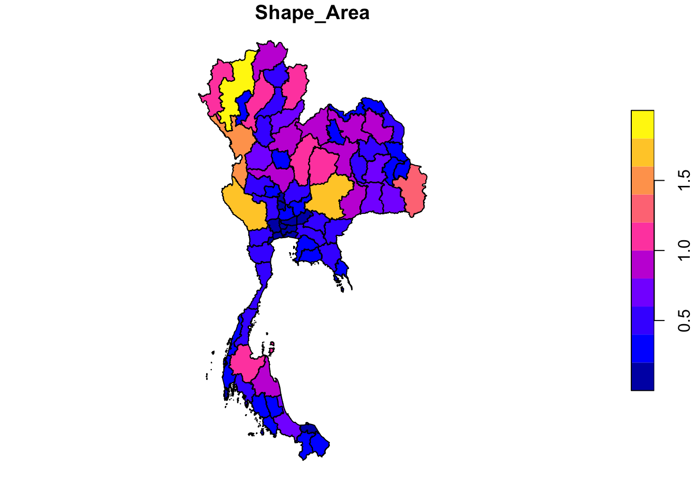
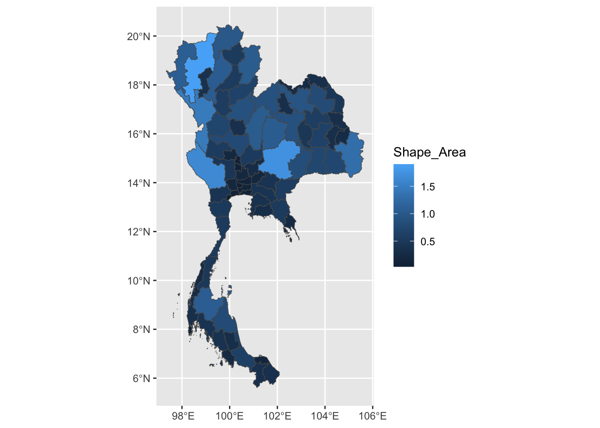
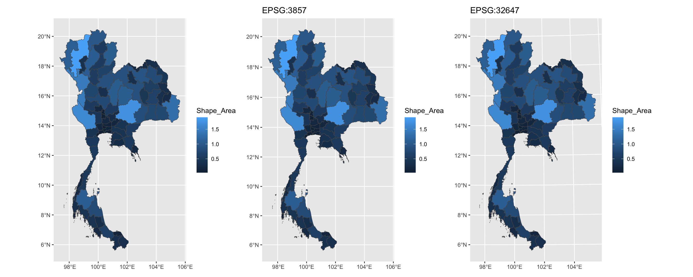
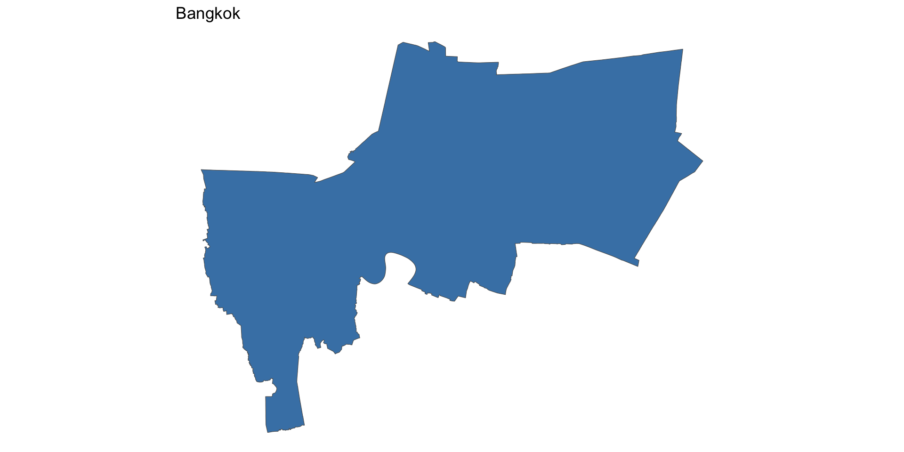
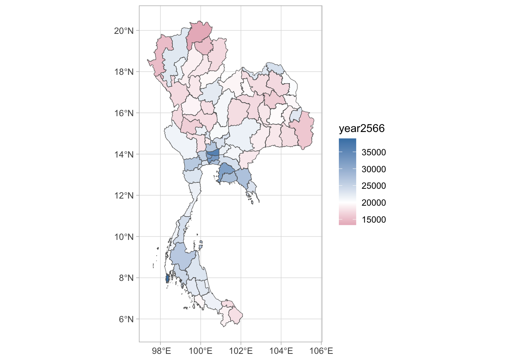
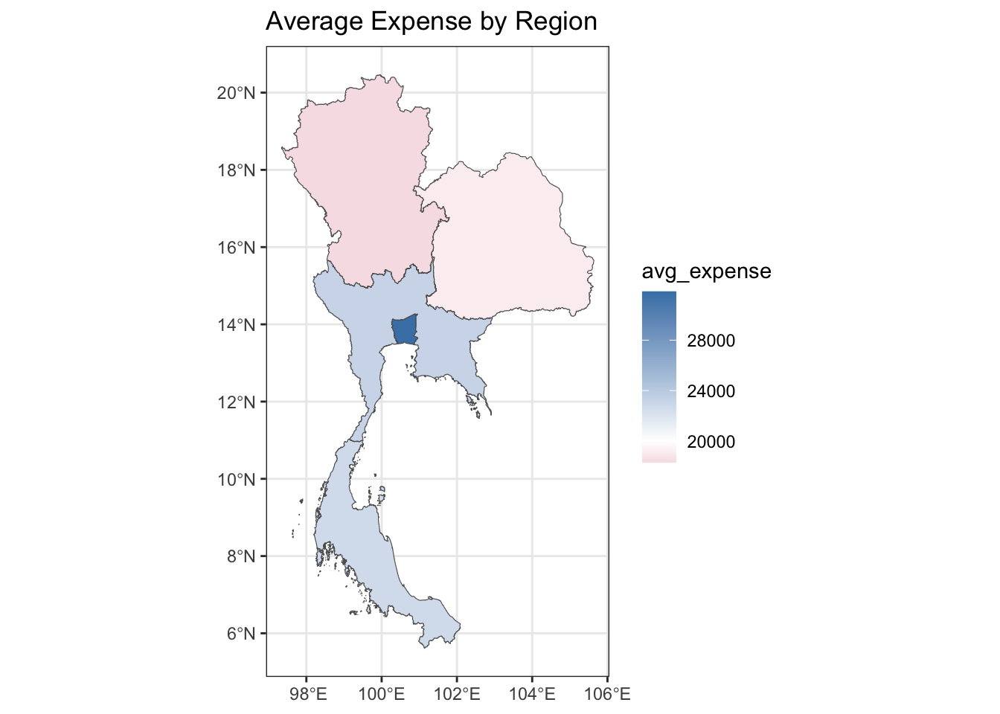
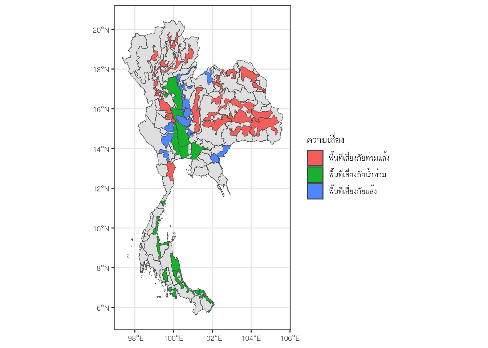

## install.packages("sf")
library(sf)
library(tidyverse)บทเรียนนี้จะกล่าวถึงการสร้างทัศนภาพข้อมูลเชิงภูมิศาสตร์ (geospatial data visualization) วัตถุประสงค์หลักของบทเรียนนี้ได้แก่
เข้าใจและสามารถใช้
{sf}สำหรับจัดการและวิเคราะห์ข้อมูลเชิงภูมิศาสตร์สร้าง geospatial data visualization ผ่าน
{ggplot2}สร้าง interactive mapping ด้วย
{leaflet}
1 Geospatial Data Visualization with {sf}
ของ R เป็น library ที่มีเครื่องมือสำหรับจัดการข้อมูลเชิงภูมิศาสตร์ โดยมีความสามารถในการจัดการข้อมูลเชิงภูมิศาสตร์ที่มีความซับซ้อน และมีการเก็บข้อมูลเชิงภูมิศาสตร์ในรูปแบบของ simple features (Pebesma 2024) ซึ่งเป็นมาตรฐานของข้อมูลเชิงภูมิศาสตร์ที่ถูกกำหนดโดย ISO 19125-1:2004
มาตรฐานดังกล่าวกำหนดวิธีการแทนค่าและจัดเก็บข้อมูลวัตถุในโลกจริงที่มีลักษณะเชิงพื้นที่ (spatial geometry) เช่น จุด เส้น และพื้นที่ในระบบข้อมูลที่เกี่ยวกับภูมิสารสนเทศ (GIS) simple features จะประกอบด้วยสองส่วนหลัก คือ
ส่วนข้อมูลเชิงภูมิศาสตร์ (geometry) ที่เก็บข้อมูลเชิงพื้นที่ของวัตถุในโลกจริง เช่น จุด เส้น และพื้นที่
ส่วนข้อมูลที่เกี่ยวข้อง (attribute) ที่เก็บข้อมูลที่เกี่ยวข้องกับวัตถุในโลกจริง เช่น ชื่อ รหัส และค่าที่เกี่ยวข้อง
นอกจากนี้ {sf} ยังรองรับการอ่านและเขียนไฟล์ Shapefile ซึ่งเป็นรูปแบบไฟล์ที่พัฒนาโดย ESRI สำหรับจัดเก็บข้อมูลเชิงเวกเตอร์ เช่น ข้อมูลเกี่ยวกับพิกัดและข้อมูลบรรยายที่ใช้ในระบบข้อมูลภูมิสารสนเทศ (GIS) รูปแบบ Shapefile ประกอบด้วยหลายไฟล์ เช่น .shp (เก็บข้อมูลเรขาคณิต), .shx (ดัชนีเชิงพื้นที่), และ .dbf (เก็บข้อมูลเชิงบรรยาย) ซึ่ง {sf} สามารถอ่านและแปลงเป็น sf-object เพื่อให้ใช้งานและวิเคราะห์ใน R ได้ง่ายขึ้น
สำหรับการสร้าง Geospatial Visualization ของประเทศไทย สิ่งสำคัญที่ต้องเริ่มต้นคือการมี ไฟล์ข้อมูลภูมิสารสนเทศ ที่ใช้เป็นพื้นฐานในการสร้างแผนที่ ซึ่งไฟล์นี้จะบรรจุข้อมูลเรขาคณิตเชิงพื้นที่ของพื้นที่ต่าง ๆ ในประเทศไทย เช่น พิกัดของขอบเขตจังหวัดหรืออำเภอ โดยข้อมูลในไฟล์นี้จะเป็นพื้นฐานที่แสดงรูปร่างของแต่ละพื้นที่
หลังจากมีไฟล์พื้นฐานแล้ว เราสามารถ รวบรวมข้อมูลเชิงบรรยาย (attributes) เพิ่มเติม เช่น ข้อมูลประชากร รายได้เฉลี่ย หรือความเสี่ยงต่อภัยธรรมชาติ แล้วใช้แพ็กเกจ {sf} ใน R เพื่อรวมข้อมูลเชิงบรรยายเหล่านี้เข้ากับข้อมูลพื้นที่ (spatial data) โดยการ join ตามขอบเขตพื้นที่ เช่น จังหวัดหรืออำเภอ ทำให้เราสามารถแสดงผลข้อมูลเชิงบรรยายร่วมกับแผนที่เชิงภูมิศาสตร์ได้
1.1 แหล่งข้อมูลภูมิสารสนเทศของประเทศไทย
1.2 นำเข้า shapefile
เราสามารถนำเข้าไฟล์ข้อมูลภูมิสารสนเทศ (shapefile) ด้วยคำสั่ง st_read() ของ {sf} โดยระบุที่อยู่ของไฟล์ shapefile ที่ต้องการนำเข้า ดังตัวอย่างต่อไปนี้
thai_prov_map <- st_read("/Users/choat/Downloads/tha_adm_rtsd_itos_20210121_shp/tha_admbnda_adm1_rtsd_20220121.shp")Reading layer `tha_admbnda_adm1_rtsd_20220121' from data source
`/Users/choat/Downloads/tha_adm_rtsd_itos_20210121_shp/tha_admbnda_adm1_rtsd_20220121.shp'
using driver `ESRI Shapefile'
Simple feature collection with 77 features and 16 fields
Geometry type: MULTIPOLYGON
Dimension: XY
Bounding box: xmin: 97.34336 ymin: 5.613038 xmax: 105.637 ymax: 20.46507
Geodetic CRS: WGS 84ทดลองเรียกตัวอย่างข้อมูลขึ้นมาดู
head(thai_prov_map)Simple feature collection with 6 features and 16 fields
Geometry type: MULTIPOLYGON
Dimension: XY
Bounding box: xmin: 100.1913 ymin: 13.47842 xmax: 100.9639 ymax: 14.80246
Geodetic CRS: WGS 84
Shape_Leng Shape_Area ADM1_EN ADM1_TH ADM1_PCODE
1 2.417227 0.13133873 Bangkok กรุงเทพมหานคร TH10
2 1.695100 0.07926199 Samut Prakan สมุทรปราการ TH11
3 1.251111 0.05323766 Nonthaburi นนทบุรี TH12
4 1.884945 0.12698345 Pathum Thani ปทุมธานี TH13
5 3.041716 0.21393797 Phra Nakhon Si Ayutthaya พระนครศรีอยุธยา TH14
6 1.739908 0.07920961 Ang Thong อ่างทอง TH15
ADM1_REF ADM1ALT1EN ADM1ALT2EN ADM1ALT1TH ADM1ALT2TH ADM0_EN ADM0_TH
1 <NA> <NA> <NA> <NA> <NA> Thailand ประเทศไทย
2 <NA> <NA> <NA> <NA> <NA> Thailand ประเทศไทย
3 <NA> <NA> <NA> <NA> <NA> Thailand ประเทศไทย
4 <NA> <NA> <NA> <NA> <NA> Thailand ประเทศไทย
5 <NA> <NA> <NA> <NA> <NA> Thailand ประเทศไทย
6 <NA> <NA> <NA> <NA> <NA> Thailand ประเทศไทย
ADM0_PCODE date validOn validTo geometry
1 TH 2019-02-18 2022-01-22 <NA> MULTIPOLYGON (((100.6139 13...
2 TH 2019-02-18 2022-01-22 <NA> MULTIPOLYGON (((100.7306 13...
3 TH 2019-02-18 2022-01-22 <NA> MULTIPOLYGON (((100.3415 14...
4 TH 2019-02-18 2022-01-22 <NA> MULTIPOLYGON (((100.8916 14...
5 TH 2019-02-18 2022-01-22 <NA> MULTIPOLYGON (((100.5131 14...
6 TH 2019-02-18 2022-01-22 <NA> MULTIPOLYGON (((100.3332 14...สังเกตว่าชุดข้อมูล sf มีส่วนประกอบสองส่วนดังที่กล่าวไว้ ส่วนแรกที่เป็นข้อมูลเชิงพื้นที่จะอยู่ในคอลัมน์ geometry ซึ่งเก็บข้อมูลเรขาคณิตเชิงพื้นที่ของพื้นที่ต่าง ๆ ในประเทศไทย ส่วนที่สองคือข้อมูลเชิงบรรยายที่เกี่ยวข้องกับพื้นที่นั้น ๆ จะอยู่ในคอลัมน์อื่น ๆ ที่ไม่ใช่ geometry ซึ่งเก็บข้อมูลที่เกี่ยวข้องกับพื้นที่นั้น ๆ เช่น ชื่อ รหัส และค่าที่เกี่ยวข้อง
ชุดข้อมูลข้างต้นเมื่อพิจารณาส่วน geometry จะเห็นว่ามีการกำกับไว้ว่าเป็น MULTIPOLYGON ซึ่งเป็นรูปแบบของเรขาคณิตเชิงพื้นที่ประเภทหนึ่งที่มีพื้นที่ย่อยหลาย ๆ พื้นที่ีรวมกัน เราสามารถนำข้อมูลส่วนนี้มาสร้างทัศนภาพข้อมูลได้เลยดังนี้
### plot(thai_prov_map)
plot(thai_prov_map["Shape_Area"])
1.3 {ggplot2} with {sf}
เราสามารถใช้ ggplot2 กับ object ประเภท {sf} ได้โดยใช้ geom_sf() ซึ่งเป็น geom ที่ใช้สำหรับพล็อตข้อมูลเชิงภูมิศาสตร์ ดังตัวอย่างต่อไปนี้
p1 <- thai_prov_map %>%
ggplot() +
geom_sf(aes(geometry = geometry, fill = Shape_Area))
p1
1.4 Coordinate Reference System
Coordinate Reference System (CRS) เป็นระบบพิกัดที่ใช้ในการกำหนดตำแหน่งของวัตถุในโลกจริงแบบ 3D ให้อยู่บนแผนที่ ระบบ CRS มีหลายรูปแบบขึ้นอยู่กับการใช้งาน เช่น
WGS84 (World Geodetic System 1984: EPSG:4326) เป็นระบบพิกัดที่ใช้กันทั่วไปน่าจะแพร่หลายที่สุดในโลกระบบหนึ่งอยู่ในกลุ่ม geographic coordinate system (GCS) ลักษณะเด่นคือการระบุตำแหน่งต่าง ๆ หรือรูปทรงเรขาคณิตบนโลกผ่านพิกัดลองจิจูด (latitude) และละติจูด (longitude) เป็นระบบที่ง่ายแต่อาจไม่ได้มีความแม่นยำสูงมาก
NAD83 (EPSG:4269) คล้าย WGS84 แต่มีการปรับปรุงความแม่นยำในการฉายภาพให้ตรงกับสภาพของทวีปอเมริกาเหนือมากขึ้น
Web Mercator (EPSG:3857) เป็นระบบพิกัดประเภท projected coordinate system (PCS) เน้นใช้แสดงผลบน website เช่น google map, openstreetmap ลักษณะเด่นคือมีการแปลงพิกัดบนทรงกลม (โลก) ให้เป็นพื้นราบ 2D โดยใช้ mercator projection วิธีการนี้มีแนวโน้มบิดเบือนพื้นที่บริเวณขั้วโลกให้ดูใหญ่กว่าความเป็นจริง
UTM (Universal Transverse Mercator) เป็นระบบพิกัดที่ใช้ในการแสดงผลบนแผนที่ที่มีความแม่นยำสูง โดยแบ่งโลกออกเป็น 60 โซนตามแนวตั้ง แต่ละโซนมีความกว้าง 6 องศา และมีระบบพิกัดของตัวเอง การแปลงพิกัดบนทรงกลม (โลก) ให้เป็นพื้นราบ 2D โดยใช้ Transverse Mercator projection พิกัดนี้เหมาะกับการทำแผนที่พื้นที่ขนาดเล็ก
ใน R เราสามารถตรวจสอบ CRS ของข้อมูลเชิงภูมิศาสตร์ได้ด้วยคำสั่ง st_crs() และเปลี่ยน CRS ด้วยคำสั่ง st_transform() ดังตัวอย่างต่อไปนี้
st_crs(thai_prov_map)Coordinate Reference System:
User input: WGS 84
wkt:
GEOGCRS["WGS 84",
DATUM["World Geodetic System 1984",
ELLIPSOID["WGS 84",6378137,298.257223563,
LENGTHUNIT["metre",1]]],
PRIMEM["Greenwich",0,
ANGLEUNIT["degree",0.0174532925199433]],
CS[ellipsoidal,2],
AXIS["latitude",north,
ORDER[1],
ANGLEUNIT["degree",0.0174532925199433]],
AXIS["longitude",east,
ORDER[2],
ANGLEUNIT["degree",0.0174532925199433]],
ID["EPSG",4326]]library(patchwork)
p2 <- thai_prov_map %>%
st_transform(crs = 3857) %>%
ggplot()+
geom_sf(aes(geometry = geometry, fill = Shape_Area))+
ggtitle("EPSG:3857")
p3 <- thai_prov_map %>%
st_transform(crs = 32647 ) %>%
ggplot()+
geom_sf(aes(geometry = geometry, fill = Shape_Area))+
ggtitle("EPSG:32647")
p1+p2+p3
1.5 Geometry
ข้อมูลเชิงพื้นที่ที่อยู่ในรูปของ geometry ใน sf มีหลายประเภท ซึ่งแต่ละประเภทจะเก็บข้อมูลเรขาคณิตเชิงพื้นที่ของวัตถุในโลกจริงในรูปแบบที่แตกต่างกัน ประเภทข้อมูลหลัก ๆ เช่น
POINT เป็นข้อมูลเรขาคณิตเชิงพื้นที่ของจุดบนแผนที่ ซึ่งมีค่าพิกัดลองและละติจูด
LINESTRING เป็นข้อมูลเรขาคณิตเชิงพื้นที่ของเส้นที่เชื่อมต่อจุดหลาย ๆ จุดเข้าด้วยกัน
POLYGON เป็นข้อมูลเรขาคณิตเชิงพื้นที่ของพื้นที่ที่มีขอบเขตเป็นเส้นต่อเนื่อง ๆ ที่ปิดรูป
MULTIPOLYGON เป็นข้อมูลเรขาคณิตเชิงพื้นที่ของพื้นที่ที่มีขอบเขตเป็นเส้นต่อเนื่อง ๆ ที่ปิดรูป แต่มีพื้นที่ย่อยหลาย ๆ พื้นที่รวมกัน
ในแผนภาพหนึ่ง ๆ อาจจะต้องใช้ geometry หลายประเภทเพื่อนำเสนอข้อมูลเชิงพื้นที่หลากหลายลักษณะขึ้นอยู่งาน
1.6 Attributes
Attribute เป็นข้อมูลคุณลักษณะของวัตถุเชิงพื้นที่ใช้บรรยายสภาพหรือบริบทของวัตถุนั้น ๆ ในโลกจริง ใน {sf} จะเก็บ attribute ดังกล่าวในรูปแบบตารางเหมือนกับ data.frame แต่จะมีความเชื่อมโยงกับข้อมูลเชิงพื้นที่ในคอลัมน์ geometry พิจารณาชุดข้อมูล thai_prov_map ที่เราได้นำเข้ามาก่อนหน้านี้ จะเห็นว่ามีตัวแปรคุณลักษณะหลายตัวที่นำเข้ามาพร้อมกัน
glimpse(thai_prov_map)Rows: 77
Columns: 17
$ Shape_Leng <dbl> 2.417227, 1.695100, 1.251111, 1.884945, 3.041716, 1.739908,…
$ Shape_Area <dbl> 0.13133873, 0.07926199, 0.05323766, 0.12698345, 0.21393797,…
$ ADM1_EN <chr> "Bangkok", "Samut Prakan", "Nonthaburi", "Pathum Thani", "P…
$ ADM1_TH <chr> "กรุงเทพมหานคร", "สมุทรปราการ", "นนทบุรี", "ปทุมธานี", "พระนครศรีอ…
$ ADM1_PCODE <chr> "TH10", "TH11", "TH12", "TH13", "TH14", "TH15", "TH16", "TH…
$ ADM1_REF <chr> NA, NA, NA, NA, NA, NA, NA, NA, NA, NA, NA, NA, NA, NA, NA,…
$ ADM1ALT1EN <chr> NA, NA, NA, NA, NA, NA, NA, NA, NA, NA, NA, NA, NA, NA, NA,…
$ ADM1ALT2EN <chr> NA, NA, NA, NA, NA, NA, NA, NA, NA, NA, NA, NA, NA, NA, NA,…
$ ADM1ALT1TH <chr> NA, NA, NA, NA, NA, NA, NA, NA, NA, NA, NA, NA, NA, NA, NA,…
$ ADM1ALT2TH <chr> NA, NA, NA, NA, NA, NA, NA, NA, NA, NA, NA, NA, NA, NA, NA,…
$ ADM0_EN <chr> "Thailand", "Thailand", "Thailand", "Thailand", "Thailand",…
$ ADM0_TH <chr> "ประเทศไทย", "ประเทศไทย", "ประเทศไทย", "ประเทศไทย", "ประเทศ…
$ ADM0_PCODE <chr> "TH", "TH", "TH", "TH", "TH", "TH", "TH", "TH", "TH", "TH",…
$ date <date> 2019-02-18, 2019-02-18, 2019-02-18, 2019-02-18, 2019-02-18…
$ validOn <date> 2022-01-22, 2022-01-22, 2022-01-22, 2022-01-22, 2022-01-22…
$ validTo <date> NA, NA, NA, NA, NA, NA, NA, NA, NA, NA, NA, NA, NA, NA, NA…
$ geometry <MULTIPOLYGON [°]> MULTIPOLYGON (((100.6139 13..., MULTIPOLYGON (…ผลลัพธ์ข้างต้นจะเห็นว่า
ชุดข้อมูลมี 77 แถว (ตามจำนวนจังหวัด) และมี 17 คอลัมน์
คอลัมน์
geometryเก็บข้อมูลเรขาคณิตเชิงพื้นที่ของพื้นที่ต่าง ๆ ในประเทศไทยคอลัมน์ที่เหลือเป็นข้อมูลพื้นฐานที่เกี่ยวข้องของแต่ละจังหวัด เช่น ความยาว ขนาดพื้นที่ ชื่อ รหัส …
1.7 {sf} with {tidyverse}
เนื่องจาก {sf} ถูกออกแบบให้มีลักษณะเป็นชุดข้อมูลแบบ data.frame ดังนั้นจึงสามารถทำงานภายใต้ tidyverse ได้โดยตรง ซึ่งเป็นข้อได้เปรียบที่สำคัญที่ทำให้สามารถใช้ {sf} ในการจัดการข้อมูลเชิงภูมิศาสตร์ได้ง่ายขึ้น เบื้องต้นเราสามารถใช้ {dplyr} หรือ {tidyr} รวมทั้ง {ggplot2} (แสดงให้ดูไปแล้ว) เพื่อจัดกระทำและสร้างทัศนภาพข้อมูลเชิงพื้นที่ตามที่ต้องการได้ เช่น
1.7.1 การคัดเลือกตัวแปร
thai_prov_map %>%
select(ADM1_TH, Shape_Area) %>%
head()Simple feature collection with 6 features and 2 fields
Geometry type: MULTIPOLYGON
Dimension: XY
Bounding box: xmin: 100.1913 ymin: 13.47842 xmax: 100.9639 ymax: 14.80246
Geodetic CRS: WGS 84
ADM1_TH Shape_Area geometry
1 กรุงเทพมหานคร 0.13133873 MULTIPOLYGON (((100.6139 13...
2 สมุทรปราการ 0.07926199 MULTIPOLYGON (((100.7306 13...
3 นนทบุรี 0.05323766 MULTIPOLYGON (((100.3415 14...
4 ปทุมธานี 0.12698345 MULTIPOLYGON (((100.8916 14...
5 พระนครศรีอยุธยา 0.21393797 MULTIPOLYGON (((100.5131 14...
6 อ่างทอง 0.07920961 MULTIPOLYGON (((100.3332 14...ผลลัพธ์ข้างต้นเราจะเห็นว่า geometry จะติดมากับ attribute ที่เราเลือกไว้ด้วยเสมอ
1.7.2 การคัดกรองข้อมูล
p4 <- thai_prov_map %>%
filter(ADM1_TH == "กรุงเทพมหานคร") %>%
ggplot()+
geom_sf(fill = "steelblue")+
theme_void()+
ggtitle("Bangkok")
p4
1.7.3 การ join ข้อมูล
โดยปกติเราสามารถเข้าถึงข้อมูลเชิงพื้นที่ที่จะใช้สำหรับสร้างแผนที่ที่ต้องการได้ไม่ยาก ปัญหาหลักคือเราต้องการชุดข้อมูลเชิงพื้นที่ที่ประกอบด้วย attribute เป้าหมายที่จะใช้นำเสนอซึ่งชุดข้อมูลลักษณะนี้ผู้วิเคราะห์จำเป็นต้องสร้างเอง ยกตัวอย่างเช่น
library(readxl)
data_expense <- read_excel("average_expense.xlsx", sheet = 1, skip = 2)
head(data_expense, 10)# A tibble: 10 × 14
ภาค `จังหวัด` `2555` `2556` `2557` `2558` `2559` `2560` `2561` `2562` `2563`
<chr> <chr> <dbl> <dbl> <dbl> <dbl> <dbl> <dbl> <dbl> <dbl> <dbl>
1 ทั่วราช… ทั่วราชอ… 18766 19061 20892. 21157 21144. 21436. 21346. 20742. 21329.
2 กรุงเท… กรุงเทพ… 31971. 32425 31606. 30882 32091. 33126. 33408. 30778. 31142.
3 <NA> กรุงเทพ… 33957. 35024. 34426. 33086. 35101. 35351. 34127. 31753. 32052.
4 <NA> สมุทรปร… 25861. 26193. 22747. 22332. 24354. 24355. 23232. 21423. 23851.
5 <NA> นนทบุรี 28731. 26947. 30812. 31381 28828. 33313. 33809. 32189. 33042.
6 <NA> ปทุมธานี 30669. 29514 30197. 29770 31271. 33604. 43301. 37086. 33824.
7 ภาคกล… ภาคกลาง 19762 19728 21144. 21055 20493. 21120. 21168. 20645. 21771.
8 <NA> พระนคร… 25216. 20494. 20410. 22218. 23095. 23780. 22790. 24440. 23391.
9 <NA> อ่างทอง 21273. 21182. 19634. 17574. 20372. 17162. 17295. 17011. 17727.
10 <NA> ลพบุรี 17357. 15945. 14911. 17969. 15876. 16012. 17017. 16830. 19180.
# ℹ 3 more variables: `2564` <dbl>, `2565` <dbl>, `2566` <dbl>สมมุติว่าวัตถุประสงค์คือการ plot รายจ่ายโดยเฉลี่ยของครัวเรือนในแต่ะละจังหวัด เราจำเป็นที่จะต้องเชื่อมโยงข้อมูลรายจ่ายดังกล่าวเข้ากับข้อมูลเชิงพื้นที่ใน thai_prov_map อย่างไรก็ตามหากใช้การรวมข้อมูลด้วย dplyr แบบปกติจะทำให้สูญเสีย class ของข้อมูลเดิมคือ sf ไป การแก้ปัญหาดังกล่าวสามารถทำได้โดยใช้ st_as_sf() ในการแปลงข้อมูลเชิงพื้นที่ที่เราได้รวมข้อมูลเชิงบรรยายเข้าไปกลับเป็น sf อีกครั้ง
data_expense %>%
rename(region = 1,
prov = 2,
year2566 = `2566`) %>%
select(region, prov, year2566) %>%
fill(region, .direction = "down") %>%
right_join(thai_prov_map,
by = join_by("prov" == "ADM1_TH")) %>%
st_as_sf() %>%
ggplot()+
geom_sf(aes(fill = year2566))+
scale_fill_gradient2(low = "maroon",
mid = "white",
high = "steelblue",
midpoint = 20000)+
theme_light()
1.7.4 group_by() และ summarise()
ทำนองเดียวกับการจัดกระทำข้อมูลทั่วไป เราสามารถใช้ group_by() และ summarise() ในการสรุปข้อมูลเชิงพื้นที่ได้เช่นกัน
expense_st_joined <- data_expense %>%
rename(region = 1,
prov = 2,
year2566 = `2566`) %>%
select(region, prov, year2566) %>%
fill(region, .direction = "down") %>%
right_join(thai_prov_map,
by = join_by("prov" == "ADM1_TH")) %>%
st_as_sf()expense_st_joined %>%
group_by(region) %>%
summarise(avg_expense = mean(year2566)) %>%
ggplot()+
geom_sf(aes(fill = avg_expense))+
scale_fill_gradient2(low = "maroon",
mid = "white",
high = "steelblue",
midpoint = 20000)+
theme_bw()+
ggtitle("Average Expense by Region")
จะเห็นว่าการใช้ grammar of data maniputation ร่วมกับ {sf} ทำให้เราสามารถจัดการข้อมูลเชิงพื้นที่ได้อย่างมีประสิทธิภาพ สามารถนำเสนอมิติต่าง ๆ ของข้อมูลได้โดยง่าย
1.8 Geometry Operations
st_distance()ใช้คำนวณระยะห่างระหว่าง geometry สองตัวst_union()ใช้รวม geometry หลายตัวเข้าด้วยกันst_centroid()ใช้หาจุดศูนย์กลางของ geometry
st_intersects(), st_disjoint(), st_touches(), st_crosses(), st_within(), st_contains(), st_overlaps(), st_equals(), st_covers(), st_covered_by(), st_equals_exact() and st_is_within_distance() รายละเอียดถ้าจำเป็นต้องใช้สามารถศึกษาได้จาก (Pebesma 2024)
x <- thai_prov_map %>% filter(ADM1_TH %in% c("กรุงเทพมหานคร","ยะลา","เชียงใหม่"))
y <- thai_prov_map %>% filter(ADM1_TH == "นครราชสีมา")
st_distance(x,y)Units: [m]
[,1]
[1,] 68260.06
[2,] 370023.01
[3,] 834005.26st_distance(x,y) %>% units::set_units(km)Units: [km]
[,1]
[1,] 68.26006
[2,] 370.02301
[3,] 834.005261.9 กิจกรรม
ขอให้ผู้เรียนลองสร้างทัศนภาพข้อมูลพื้นที่เสี่ยงภัยของประเทศดังรูป
options: ENCODING=WINDOWS-874
Reading layer `All_Thai_AB_161061' from data source
`/Users/choat/Downloads/5.พื้นที่เป้าหมาย (Area Based)/All_Thai_AB_161061.shp'
using driver `ESRI Shapefile'
Simple feature collection with 66 features and 6 fields
Geometry type: MULTIPOLYGON
Dimension: XY
Bounding box: xmin: 418132 ymin: 637937.4 xmax: 1190131 ymax: 2263222
Projected CRS: WGS 84 / UTM zone 47N
ชุดข้อมูลที่เกี่ยวข้อง
References
Pebesma, Edzer. 2024. Simple Features for r. https://r-spatial.github.io/sf/articles/sf1.html.